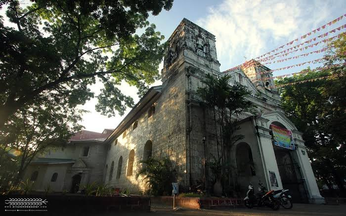
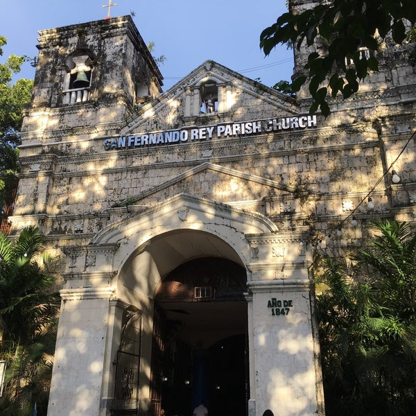
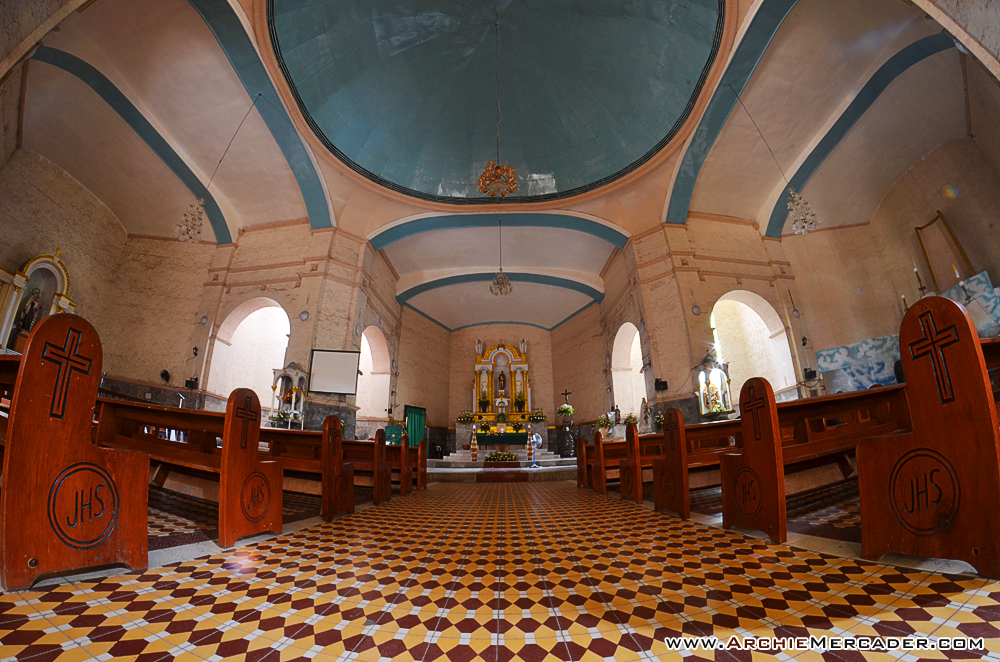
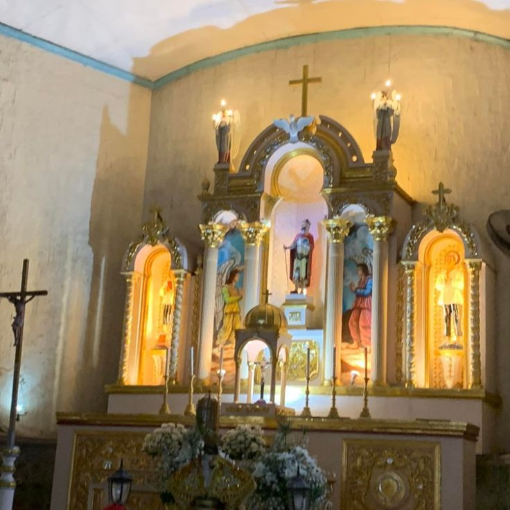
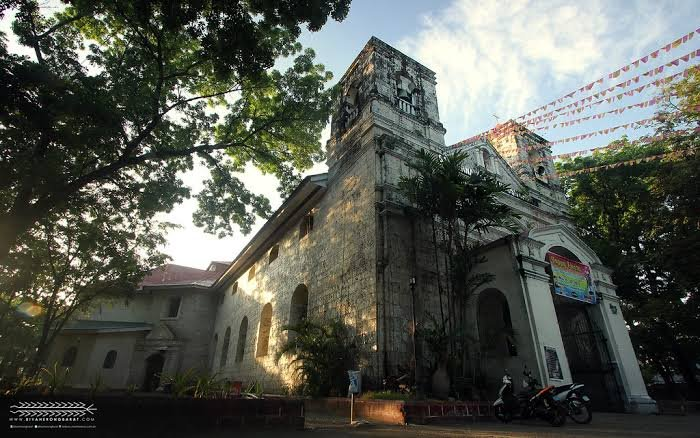
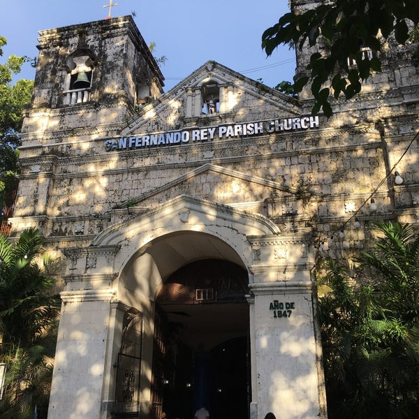
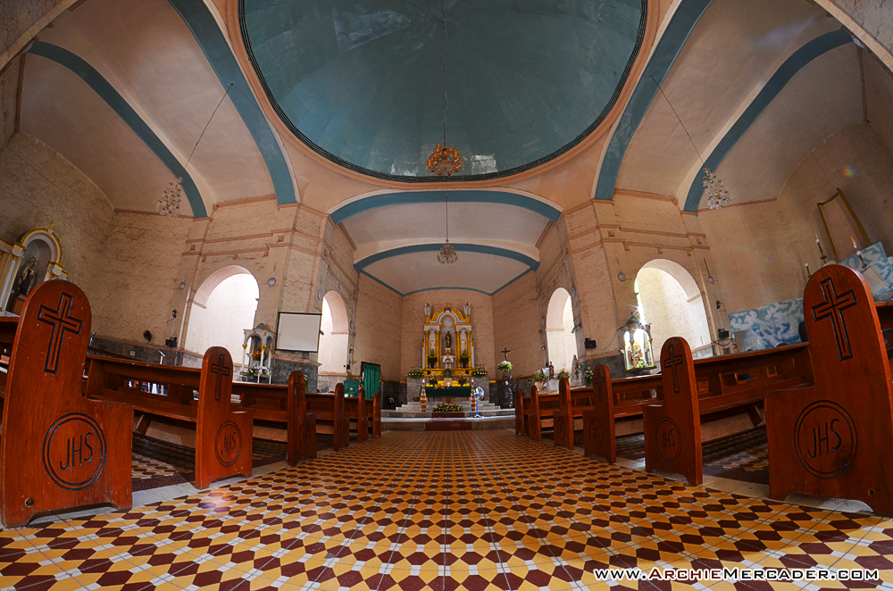
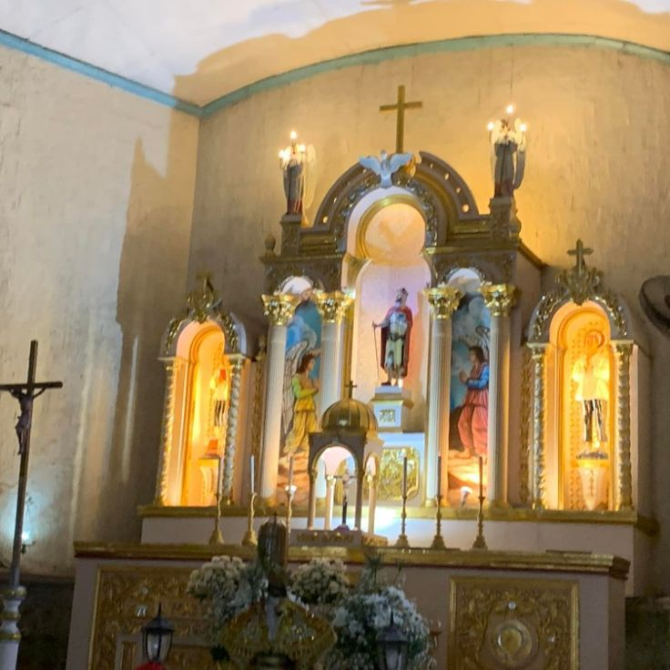

ABOUT THE PLACE
The San Fernando Rey Parish Church in Liloan, Cebu, is a historic Catholic church dedicated to Saint Ferdinand III of Castile, also known as San Fernando Rey. This church, with its distinct Spanish-era architectural style, serves as a spiritual and cultural hub for the local community. Located in the heart of Liloan, the church is well-known for its beautiful interior, serene ambiance, and intricate details, including its classic façade and bell tower. It has been a witness to countless religious celebrations, including the town’s annual fiesta honoring its patron saint.